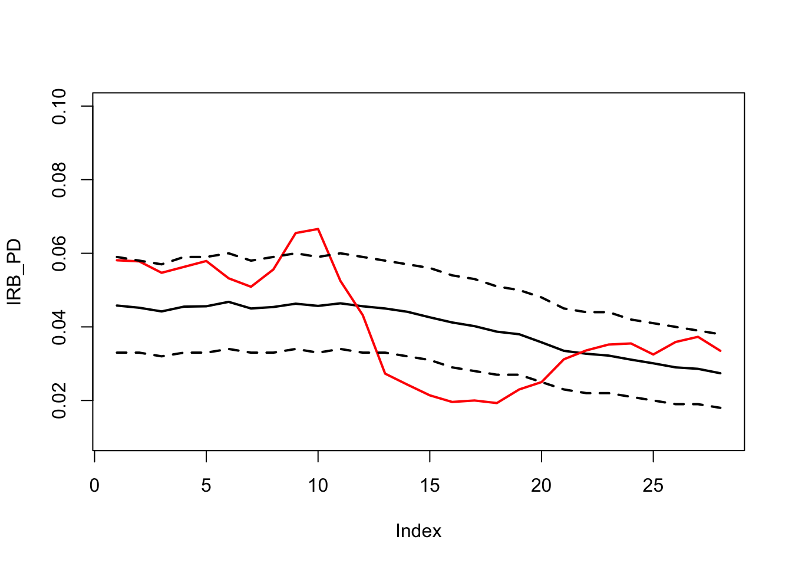
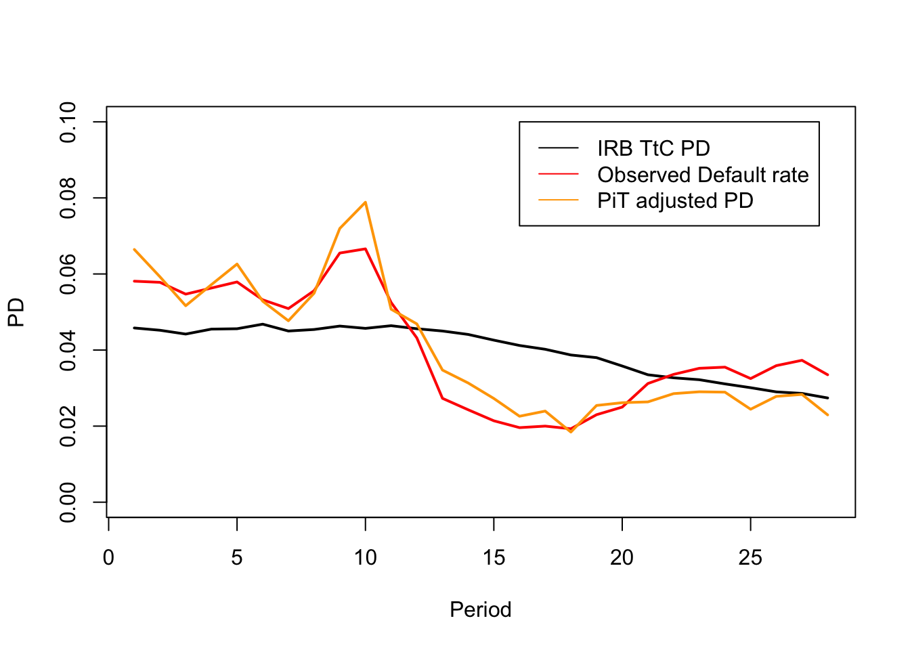
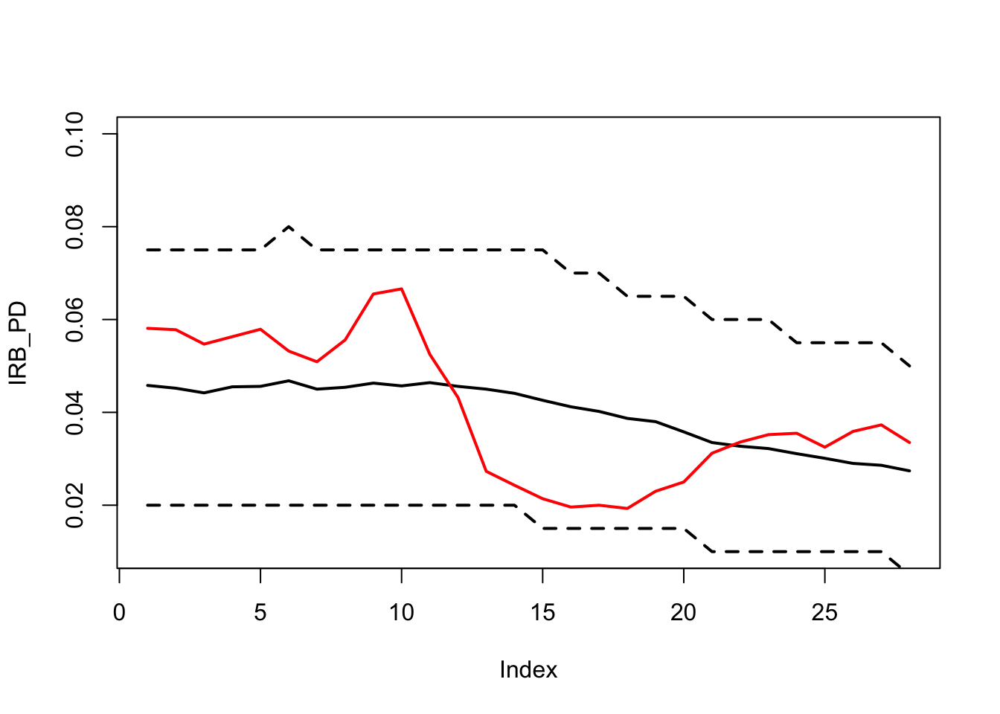
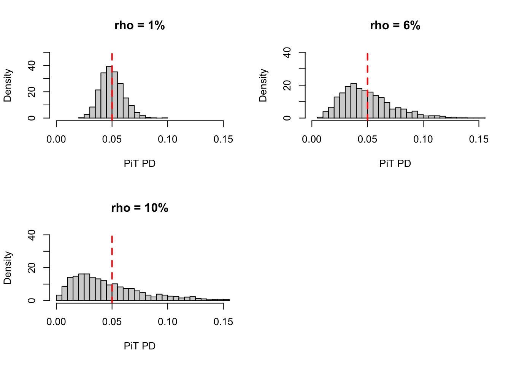
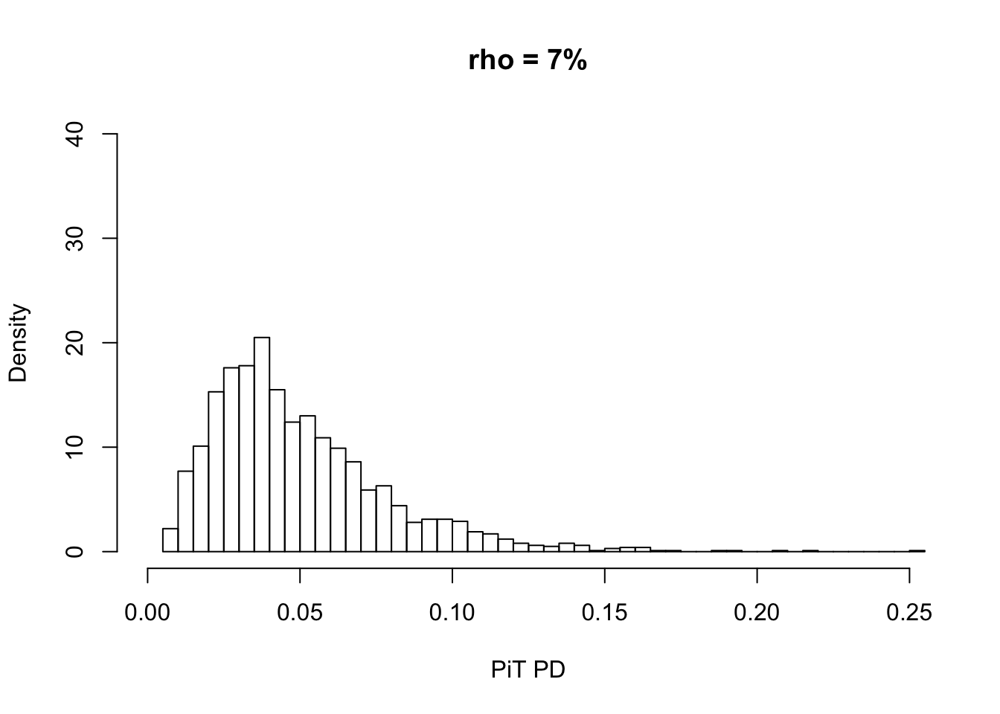
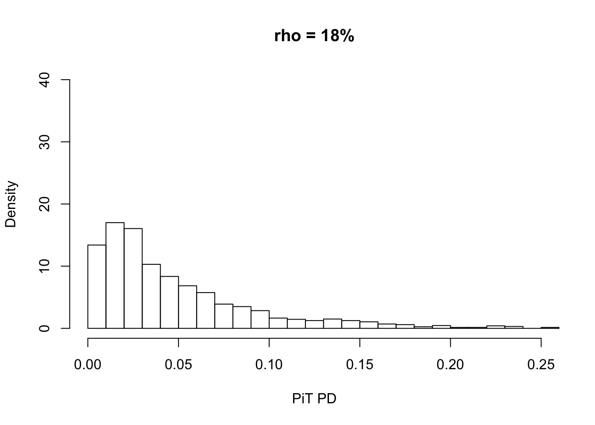
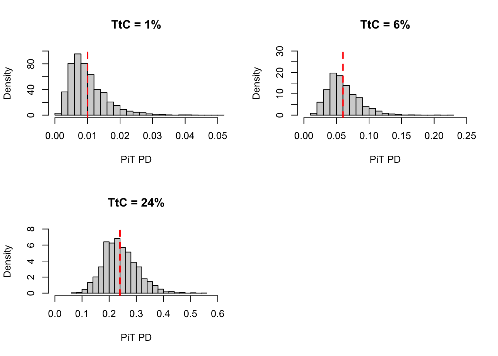
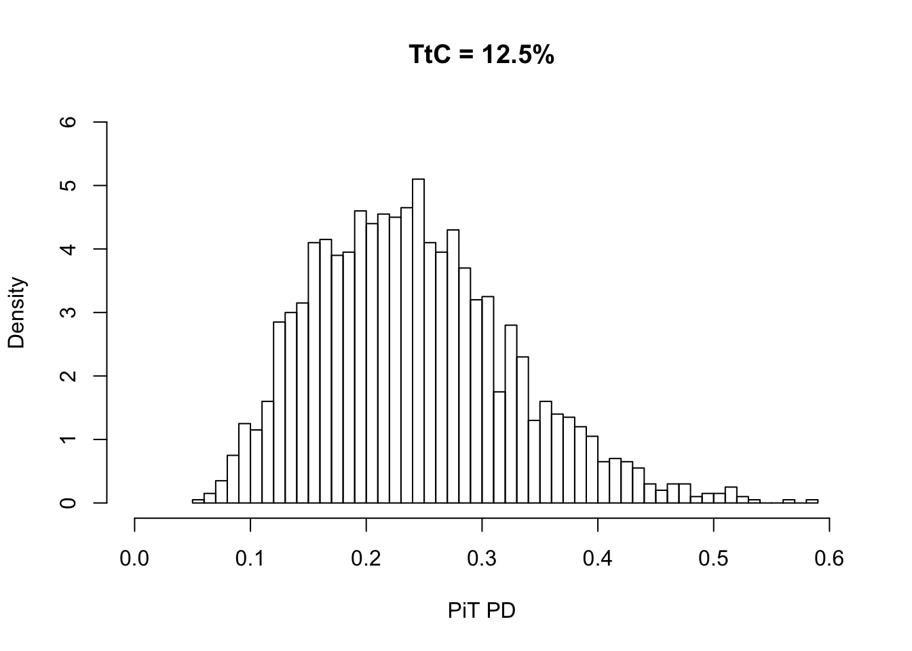

This page is my summary of notes on Basel II and the ASRF model from various external sources and literatures including the regulatory documents:
Unlike CECL and IFRS 9, the accounting standards for allowance on credit loss that focus on lifetime of the loan, the Basel rule focues on the yearly (12-month) loss for calculating the regulatory capital. And, unlike CECL and IFRS 9 that requires loss estimation based on point-in-time (PIT) which requires forwarding looking forecast, the Basel rule requires through-the-cycle (TTC) loss forecast over the next 12 months. Portfolio-invariant is required under the Basel rule.
As mentioned in (Basel Committee on Banking Supervision 2005), “one of the functions of bank capital is to provide a buffer to protect a bank’s debt holders against peak losses that exceed expected levels”, i.e. the Unexpected Loss (UL).
The Merton’s model leverage the Black-Scholes model used in option pricing. Similar to option pricing that the option’s value being the surplus between stock price and the strike price, the value of a loan is the surplus between the underlying company’s total assets and its total liabilities. The logic is that the loan defaults when the company’s total assets cannot support its total liabilities. The evolution of the asset value \(A\) is log-normmally distributed as the stock price in Black Scholes. The industry practice is to use Merton’s model to estimate PD for corporation, and use logistic regression type model to estimate PD for retail exposures.
Stochastic differential equation (SDE) of a firm’s assets: \[dA = (\mu A )dt + \sigma AdW(t)\]
Apply Ito’s lemma for \(g(x) = ln(x)\):
\[ \begin{aligned} dg(A) &= d(ln(A))\\ &= \frac{1}{A}dA + \frac{1}{2} \frac{-1}{A^2} (dA)^2 \\ &= \mu dt + \sigma dW(t) - \frac{1}{2A^2} [(\mu A)^2(dt)^2 + 2(\mu A)dt\sigma AdW(t) + \sigma^2 (dW(t))^2] \\ &= \mu dt + \sigma dW(t) - \frac{1}{2A^2} [0 + 0 + \sigma^2A^2dt]\\ &= \mu dt + \sigma dW(t) - \frac{1}{2} \sigma^2dt\\ &= (\mu - \frac{1}{2}\sigma^2)dt + \sigma dW(t) \\ \end{aligned} \]
\[ln(A_t) = ln(A_0) + \int_{0}^{t} (\mu - \frac{1}{2}\sigma^2)dt + \sigma dW(t)\]
\[ \begin{aligned} A_t &= A_0 \cdot e^{(\mu - \frac{1}{2}\sigma^2)dt + \sigma dW(t)} \\ &= A_0 \cdot e^{(\mu - \frac{1}{2}\sigma^2)t + \sigma \sqrt{t}X(t)} \end{aligned} \] where \(X_t \sim \mathcal{N}(0,1)\) or \(\Phi\)
The probability of default (not risk-neutral, but physical world and therefore \(\mu\) is used instead of \(r\)) can be expressed as
\[ \begin{aligned} \mathcal{P}[A_i(T)<L_i] &= \mathcal{P}[A_i(0) \cdot e^{(\mu_i - \frac{1}{2}\sigma_i^2)T + \sigma_i \sqrt{T}X_i(T)}<L_i]\\ &= \mathcal{P}[X_i(T)<\frac{ln(L_i)-ln(A_i(0))-(\mu_i-\frac{\sigma_i^2}{2})T}{\sigma_i \sqrt{T}}] \\ &= \mathcal{P}[X_i(T)>\frac{ln(A_i(0))-ln(L_i)+(\mu_i-\frac{\sigma_i^2}{2})T}{\sigma_i \sqrt{T}}] \\ &= 1-\Phi(d2) \\ &= \Phi(-d2) \end{aligned} \] where \(L_i\) is the total liabilities of company \(i\), and
\[d_2 = \frac{ln(A_i(0))-ln(L_i)+(\mu_i-\frac{\sigma_i^2}{2})T}{\sigma_i \sqrt{T}}\]
Note that unlike Black-Scholes which is under the risk-neutral measure, the Merton model here is under physical measure.
The Merton’s model can be extended to Asymptotic Single Risk Factor model (ASRF), assuming the assets value of any single borrowing company is correlated that of any other company with correlation \(\rho\) ASRF model is portfolio-invariant. (Juulia Happonen 2016) provides the derivation of ASRF model (also show in below).
The asset value of company \(i\) is driven by a single factor \(Z\) that represents the systemic credit risk. The idiosyncretic risk should already diversified.
\[X_i = aZ+b \epsilon_i\] where both \(Z\) and \(\epsilon\) follow standard normal distribution and \(Z\) is independent of \(\epsilon\) and each of \(\epsilon_i\) for \(i=1,...,n\) is independent of each other
To find \(a\):
\[ \begin{aligned} \rho = cor(X_i, X_j) &= \frac{Cov(X_i, X_j)}{\sigma_{X_i}\sigma_{X_j}} \\ &= \frac{E[X_iX_j] - E[X_i]E[X_j]}{1\cdot 1} \\ &= E[(aZ+b_i\epsilon_i)(aZ+b_j\epsilon_j)] - 0 \\ &= E[a^2Z^2+ab_iZ\epsilon_i+ab_jZ\epsilon_j+b_ib_j\epsilon_i\epsilon_j] \\ &= a^2E[Z^2] + ab_iE[Z]E[\epsilon_i] + ab_jE[Z]E[\epsilon_j] + b_ib_jE[\epsilon_i]E[\epsilon_j] \\ &= a^2E[Z^2] + 0\\ &= a^2(Var(Z)+E[Z]^2) = a^2 \end{aligned} \] The parameter \(a\) is then therefore \(\sqrt{\rho}\).
Then to find \(b\):
\[ \begin{aligned} Var(X_i) &= E[X_i^2] - E[X_i]^2 \\ &= E[(aZ+b_i\epsilon_i)^2] - a^2 \\ &= a^2E[Z^2] + 2abE[Z]E[\epsilon_i] + b_i^2E[\epsilon_i^2] \\ &= a^2E[Z^2] +0+b_i^2 \\ &= a^2+b^2 = \rho+b_i^2\\ \end{aligned} \] Given that \(Var(X_i) = 1\), we obtain that \(b_i^2 = \sqrt{1-\rho}\). With \(a = \sqrt{\rho}\) and \(b_i = \sqrt{1-\rho}\) as shown in above, we can now write \(X_i\) as:
\[X_i = \sqrt{\rho} \cdot Z + \sqrt{1-\rho} \cdot \epsilon_i\] Now we want to derive the conditional default probability given the information of systematic credit risk \(Z\).
\[ \begin{aligned} \mathcal{P}(A_i(T)<L_i) &= \mathcal{P}(X_i(T)<-d_2)\\ &= \mathcal{P}(\sqrt{\rho} \cdot Z + \sqrt{1-\rho} \cdot \epsilon_i < -d_2) \\ &= \mathcal{P}(\epsilon_i < \frac{-d_2-\sqrt{\rho} \cdot Z}{\sqrt{1-\rho}}) \\ &= \Phi(\frac{-d_2-\sqrt{\rho} \cdot Z}{\sqrt{1-\rho}}) \\ &= \Phi(\frac{\Phi^{-1}(PD_i^{*}) -\sqrt{\rho} \cdot Z}{\sqrt{1-\rho}}) \\ \end{aligned} \] where \(PD_i^{*}\) is the unconditionally default probability (PD), or the through-the-cycle (TTC) PD and \(\Phi^{-1}(PD_i^{*})\) is the thresold for default by taking the inverse of standard normal distribution.
The credit loss:
\[Loss = I \cdot EAD \cdot LGD\] where \(I\) is the indicator function of default.
The conditional expected value of the default indicator given the systemic credit risk variable is:
\[E[I_i|Z] = \Phi(\frac{\Phi^{-1}(PD_i^{*})-\sqrt{\rho}Z}{\sqrt{1-\rho}})\]
Assuming PD, EAD and LGD are independent, then the expected loss (EL) for the portfolio is:
\[E[L_p|Z] = \sum_{i=1}^{n} EAD_i \cdot LGD_i \cdot \mathcal{N}(\frac{\Phi^{-1}(PD_i^{*})-\sqrt{\rho}Z}{\sqrt{1-\rho}})\]
Now we can calculate the value-at-risk (VaR) given a specified condifence level \(\alpha\):
\[VaR(\alpha) = \sum_{i=1}^{n} EAD_i \cdot LGD_i \cdot \Phi(\frac{\Phi^{-1}(PD_i^{*})-\sqrt{\rho} \cdot \Phi^{-1}(1-\alpha)}{\sqrt{1-\rho}})\] In practice,
The Basel rules for calculating the correlation \(\rho\) are:
To derive \(PD_i^{*}\) we need \(\mu\) the instantenious expected rate of return of the asset value of company \(i\)
The asset correlation \(\rho\) can be estimated from the default rate. Following the equation above:
\[ \begin{aligned} PD_{PiT} &= \mathcal{P}(A_i(T)<L_i)\\ &= \Phi(\frac{\Phi^{-1}(PD_i^{*}) -\sqrt{\rho} \cdot Z}{\sqrt{1-\rho}}) \\ \end{aligned} \]
again, the \(PD_{i}^*\) is the \(PD_{TtC}\).
Then,
\[ \begin{aligned} \Phi^{-1}(PD_{PiT}) &= \frac{\Phi^{-1}(PD_i^{*}) -\sqrt{\rho} \cdot Z}{\sqrt{1-\rho}} \\ Var [\Phi^{-1}(PD_{PiT})]&= Var[\frac{\Phi^{-1}(PD_i^{*}) -\sqrt{\rho} \cdot Z}{\sqrt{1-\rho}}] \\ Var [\Phi^{-1}(PD_{PiT})] &= \frac{1}{1-\rho} Var[\Phi^{-1}(PD_i^{*})] + \frac{\rho}{1-\rho} \cdot 1 \\ Var [\Phi^{-1}(PD_{PiT})] &= \frac{\rho}{1-\rho} \\ Var [\Phi^{-1}(PD_{PiT})] - \rho Var [\Phi^{-1}(PD_{PiT})] &= \rho \\ \rho (1+ Var[\Phi^{-1}(PD_{PiT})]) &= Var [\Phi^{-1}(PD_{PiT})]\\ \rho &= \frac{Var [\Phi^{-1}(PD_{PiT})]}{1+Var [\Phi^{-1}(PD_{PiT})]} \\ \end{aligned} \] assuming the \(PD_{TtC}\) (or \(PD_i^{*}\)) is constant, then \(Var[\Phi^{-1}(PD_{TtC})]=0\)
If there are multiple ratings in the pool, then \(PD_{TtC}\) of the portfolio is not constant (portfolio changes over time). Therefore, \(\rho\) would need to be estimated by maximum likelihood in this case.
avg_IRB_PD <- c(0.0458, 0.0452, 0.0442, 0.0455, 0.0456, 0.0468, 0.045, 0.0454, 0.0463, 0.0457
, 0.0464, 0.0456, 0.045,0.0441, 0.0426, 0.0412, 0.0402, 0.0387, 0.0380, 0.0358
, 0.0335, 0.0327, 0.0322, 0.0311, 0.0301, 0.0290, 0.0286, 0.0274)
default_rate <- c(0.0581, 0.0578, 0.0547, 0.0563, 0.0579, 0.0532, 0.0509, 0.0556, 0.0655, 0.0666
, 0.0525, 0.0432, 0.0273, 0.0243, 0.0214, 0.0196, 0.02, 0.0193,0.0230, 0.0250
, 0.0312, 0.0336, 0.0352,0.0355, 0.0325, 0.0359, 0.0373, 0.0335)
empirical_q <- rank(default_rate)/(length(default_rate)+1)
Vasicek_PDF <- function(PiT, IRB, AC) {
Vasicek_PDF <- sqrt((1-AC)/AC) * exp(0.5*(qnorm(PiT)^2 - ( ( sqrt(1-AC)*qnorm(PiT)-qnorm(IRB))/sqrt(AC))^2) )
}
Vasicek_CDF <- function(PiT, IRB, AC) {
Vasicek_CDF <- (1-pnorm(-qnorm(PiT)*sqrt(1-AC)-qnorm(IRB)/sqrt(AC)) )
}
Vasicek_ICDF <- function(CI, IRB, AC) {
Vasicek_ICDF <- pnorm( (qnorm(IRB)-sqrt(AC)*qnorm(1-CI)) /sqrt(1-AC) )
}
rho_candidate <- seq(0.01,0.05,0.0001)
calibration_process <- as.data.frame(matrix(NA, nrow=length(rho_candidate), ncol=2))
for(i in 1:length(rho_candidate)) {
sum_loglikelihood <- sum(log(Vasicek_PDF(PiT = default_rate, IRB = avg_IRB_PD, rho_candidate[i])))
calibration_process[i,1] <- rho_candidate[i]
calibration_process[i,2] <- sum_loglikelihood
}
rho <- calibration_process[which(calibration_process[,2]==max(calibration_process[,2])),1]
PiT_empirical_q <- Vasicek_ICDF(CI=empirical_q, IRB=avg_IRB_PD, AC=rho)
plot(avg_IRB_PD, type='l', ylim=c(0,0.1), ylab = "PD", xlab = "Period")
lines(default_rate, col='red')
lines(PiT_empirical_q, col='orange')
legend(x=16, y=0.1, c("IRB TtC PD", "Observed Default rate","PiT empirical quantile"),col=c("black","red","orange"),lty=c(1,1,1))
cat(paste0("The calibrated asset correlation is: ",rho*100,"% \n"))## The calibrated asset correlation is: 2.61%The main feature of the IFRS9 requirement is the point-in-time (PiT) risk parameters, i.e. the PD, EAD or LGD should reflect the current & future economic condition as opposed to the through-the-cycle (TtC) risk parameters. The ASRF model discussed in the above section can also be used in the IFRS 9 as \(z\) (standard normal distribution) represents the single systemetic credit risk factor.
To make the PiT adjustment for PD, we have to first assume that the flunctuation of the observed default rate is a reflection of the economic condition as opposed to random noise around the TtC PD. Based on the IRB PD (12 month), we can construct the binomial confidence bound around it.
The figures below show the binomial confidence bound for n=1000 and n=20000. The greater the observation size, the smaller the bound. In other words, we need to have enough data to ensure that we are not model random noise if we were to link macroeconomic factor for the PiT adjustment. It’s likely not achievable for wholesale portfolio where the number of observations is limited and the expert judgement is required macroeconomic PiT adjustment.
The below example is an simplied case. The average IRB PD can be different per period as the portfolio compisition changes and so does the number of observations per period.
binomial_bounds <- function(static_size) {
n <- rep(static_size, 25)
odr <- c(0.024,0.025,0.024,0.022,0.023
,0.025,0.023,0.021,0.022,0.024
,0.023,0.021,0.021,0.023,0.021
,0.019,0.019,0.021,0.020,0.019
,0.020,0.022,0.022,0.022,0.023)
IRB_PD <- rep(mean(odr),25)
down_bound <- rep(qbinom(0.025, static_size,IRB_PD[1])/static_size,25)
up_bound <- rep(qbinom(0.975, static_size,IRB_PD[1])/static_size,25)
plot(IRB_PD, type='l', ylim = c(0.01,0.04))
lines(odr, col='red')
lines(down_bound, lty=2)
lines(up_bound,lty=2)
}
binomial_bounds(static_size=1000)
binomial_bounds(static_size=20000)
The histagrams shows that as the \(\rho\) increase, the distribution becomes more flat tailed.
rho <- c(0.02,0.07,0.18)
ttc <- 0.05
n <- 2000
z <- rnorm(n, mean=0, sd=1)
pit <- matrix(nrow=n,ncol=3)
for(i in 1:n){
pit[i,1] <- pnorm((qnorm(ttc)-sqrt(rho[1])*z[i])/sqrt(1-rho[1]),0,1)
pit[i,2] <- pnorm((qnorm(ttc)-sqrt(rho[2])*z[i])/sqrt(1-rho[2]),0,1)
pit[i,3] <- pnorm((qnorm(ttc)-sqrt(rho[3])*z[i])/sqrt(1-rho[3]),0,1)
}
hist(pit[,1], breaks=40,freq=FALSE, ylim=c(0,40), xlim=c(0,0.25), xlab='PiT PD', main = 'rho = 2%')
hist(pit[,2], breaks=40, freq=FALSE, ylim=c(0,40), xlim=c(0,0.25), xlab='PiT PD', main = 'rho = 7%')
hist(pit[,3], breaks=50, freq=FALSE, ylim=c(0,40), xlim=c(0,0.25), xlab='PiT PD', main = 'rho = 18%')
The histagram shows that the shape of PiT PD distributions are quite different given the same \(\rho\) but different \(PD_{TtC}\). Therefore, for different PD rating \(r_{i}\) (different \(PD_{TtC}\)), the \(\rho_{r_i}\) should be different to have the same shape.
rho <- 0.075
ttc <- c(0.02,0.05,0.24)
n <- 2000
z <- rnorm(n, mean=0, sd=1)
pit <- matrix(nrow=n,ncol=3)
for(i in 1:n){
pit[i,1] <- pnorm((qnorm(ttc[1])-sqrt(rho)*z[i])/sqrt(1-rho),0,1)
pit[i,2] <- pnorm((qnorm(ttc[2])-sqrt(rho)*z[i])/sqrt(1-rho),0,1)
pit[i,3] <- pnorm((qnorm(ttc[3])-sqrt(rho)*z[i])/sqrt(1-rho),0,1)
}
hist(pit[,1], breaks=40, freq=FALSE, ylim=c(0,50), xlim=c(0,0.25), xlab='PiT PD', main = 'TtC = 2.5%')
hist(pit[,2], breaks=40, freq=FALSE, ylim=c(0,20), xlim=c(0,0.25), xlab='PiT PD', main = 'TtC = 5%')hist(pit[,3], breaks=40, freq=FALSE, ylim=c(0,6), xlim=c(0,0.6), xlab='PiT PD', main = 'TtC = 12.5%')
With the TtC rating migration matrix, and PiT adjustment for default probability are established, the next step is the PiT adjustment for non-default rating migration.
\[MP^{PiT}_{r \to d} = F^{-1}_{PD}(MP^{TtC}_{r \to d};\rho_r;PiC)\]
\(F^{-1}_{PD}\) is the inverse of Vasick distribution. recall that \(\Phi(\frac{\Phi^{-1}(PD_i^{*}) -\sqrt{\rho} \cdot Z}{\sqrt{1-\rho}})\)
\(PiC\) refers to the standard normal \(Z\) in the previous equation, but in here, it would be an actual number between 0 and 1 presribed by the economic scenario.
We can then derive the migration probability from \(r\) to one rating above default \(d-1\):
\[ \begin{aligned} MP^{PiT}_{r \to d-1} &= MP^{PiT}_{r \to \{d,d-1\}} - MP^{PiT}_{r \to d}\\ &= F^{-1}_{PD}(MP^{TtC}_{r \to \{d, d-1\}};\rho_r;PiC) - F^{-1}_{PD}(MP^{TtC}_{r \to d};\rho_r;PiC)\\ \end{aligned} \]
so on and so forth, we can derive the migration probability of \(r \to c\) where \(c\) is any non-default rating.
Alternative to the Standard Approach (SA), the Basel II also allows banks to use Internal Ratings-Based (IRB) approach to measure the risk parameters (PD, EAD and/or LGD) for Risk weighted Asset (RWA) calculation.
Basel Committee on Banking Supervision. 2005. An Explanatory Note on the Basel Ii Irb Risk Weight Functions. https://www.bis.org/bcbs/irbriskweight.pdf.
Juulia Happonen. 2016. Theory Behind Regulatory Capital Formulae. https://aaltodoc.aalto.fi/bitstream/handle/123456789/22834/master_Happonen_Juulia_2016.pdf?sequence=1&isAllowed=y.